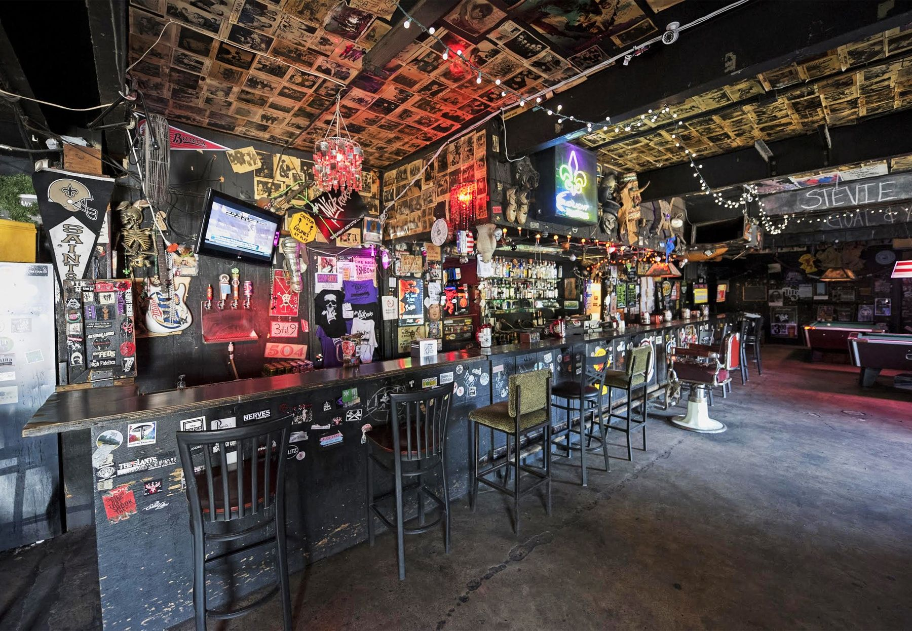
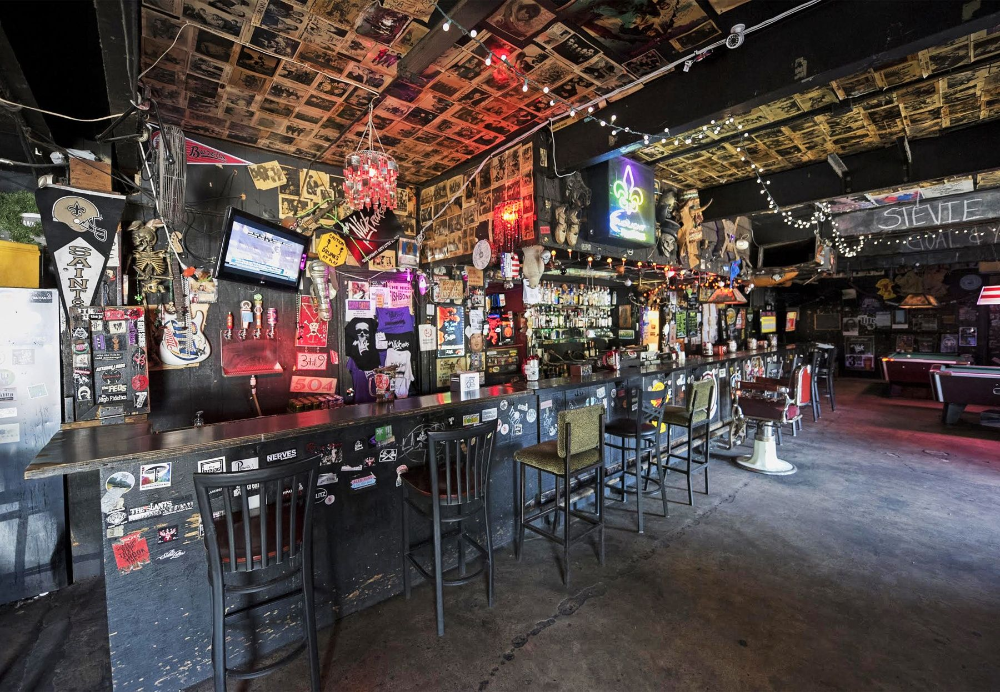

Welcome to Charlie's Pub, where every pint tells a story and every meal feels like home. Established in 1995, Charlie's Pub has been a beloved fixture in the heart of our community, offering a warm and inviting atmosphere paired with exceptional food and drinks. At Charlie's, we believe in more than just serving great food and drinks; we're dedicated to creating memorable experiences for our guests. Whether you're here for a casual lunch, a lively evening with friends, or a special celebration, our attentive staff is committed to ensuring you feel welcomed and well taken care of. Our menu features a delicious array of pub classics, crafted with the finest ingredients and a touch of culinary flair. From juicy burgers and crispy fish and chips to savory appetizers and hearty salads, there's something to satisfy every craving. And let's not forget our extensive selection of craft beers, fine wines, and handcrafted cocktails, expertly curated to complement your meal perfectly. But Charlie's Pub is more than just a place to eat and drink; it's a gathering spot for our community. Whether you're cheering on your favorite team during game night, enjoying live music from local artists, or simply catching up with friends over a pint, you'll find a sense of camaraderie and warmth that keeps guests coming back time and time again. As a family-owned establishment, we take pride in our roots and are grateful for the support of our loyal patrons over the years. We're committed to giving back to the community that has given us so much, whether through hosting charity events, supporting local organizations, or simply being a welcoming space for all. Thank you for choosing Charlie's Pub. We look forward to serving you and creating memories together for many years to come. Cheers!
At our pub music is our passion. We at Charlie's collaborate together to set the tone for your visit. Click here to check out our playlist that is constantly being updated with local artists, fresh new talent, and classics.